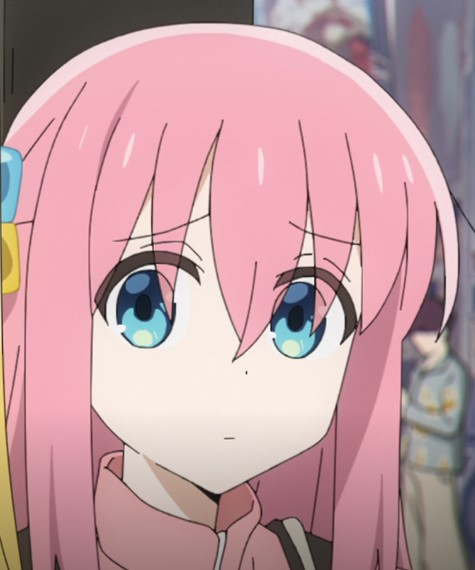

Section 1

Bocchi the Rock! (ぼっち・ざ・ろっく! Botchi za Rokku!?) es una serie de manga yonkoma japonesa escrita e ilustrada por Aki Hamaji.
Comenzó a serializarse en la revista Manga Time Kirara Max de Hōbunsha desde el 19 de diciembre de 2017, y se ha recopilado en cinco volúmenes tankōbon hasta el momento.
Una adaptación de la serie a anime producido por el estudio CloverWorks se estrenó el 8 de octubre de 2022.